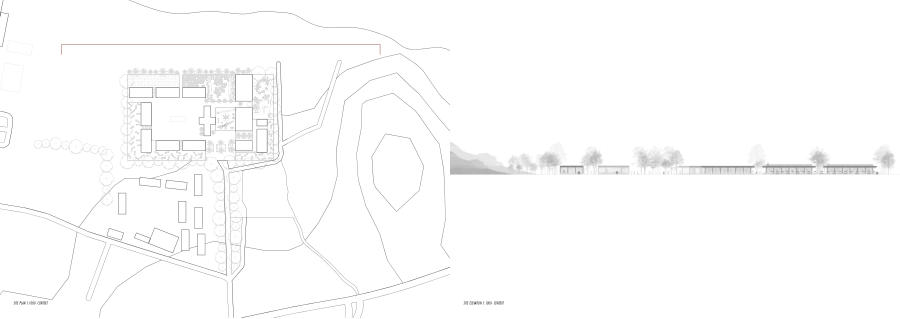
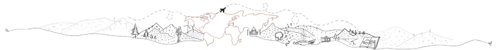
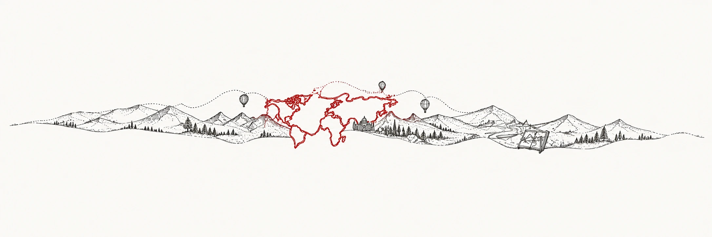
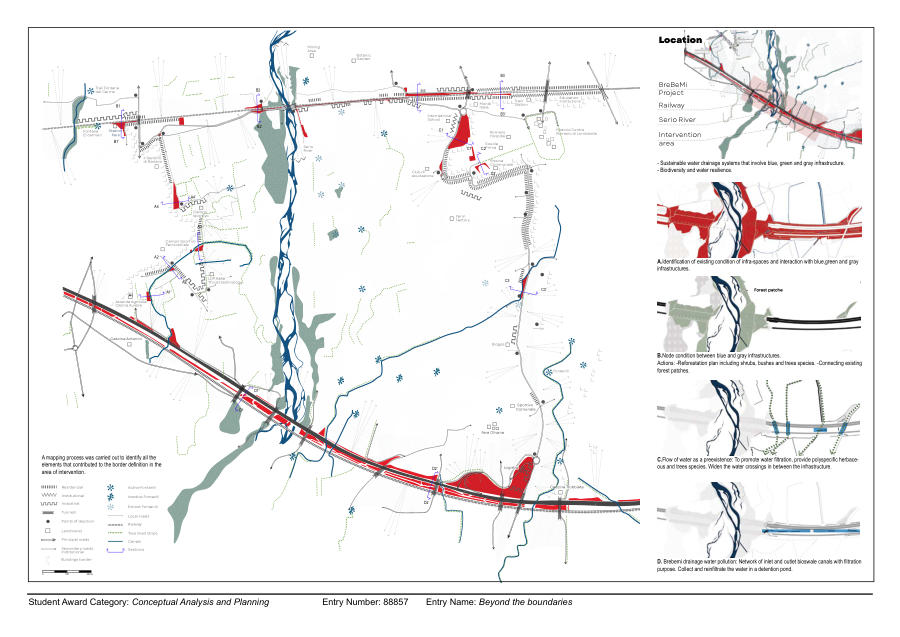

Xenia Lunapark
A modernist motel on Karteros Beach reimagined as a year-round seaside playground. Heritage, play, and community meet on the Aegean shore.

Architect · M.Sc. Landscape Architecture Candidate
Exploring the relationships between architecture, landscape, and the people who inhabit them.


I see architecture and landscape as a connected whole - shaped by people, place, and natural systems.
My approach is responsive to context: understanding the character of a place, its heritage, and the relationships that make it meaningful.
I am an architect and a Landscape Architecture candidate at Politecnico di Milano. My work moves between research, design, and technical documentation, with an interest in landscapes that bring people and nature closer together.
“We do not simply build beside nature; we live, design, and evolve within it.”
From the reuse of a modernist landmark to the reconnection of a fragmented landscape.
A modernist motel on Karteros Beach reimagined as a year-round seaside playground. Heritage, play, and community meet on the Aegean shore.

Weaving a new network through land and water. Springs, bioswales, detention ponds, and forests reconnect a plain fragmented by infrastructure.

2024 - Present
Politecnico di Milano · Italy
Land, Landscape and Heritage
2018 - 2023
Arvindbhai Patel Institute of Environmental Design (APIED) · India
Thesis: Aatman Aur Prakruti (Soul and Nature) - healing through sound and nature.
Supervisor: Landscape Ar. Parita Jani.
Oct 2025 - Feb 2026 · Part-time
Politecnico di Milano · Historic Gardens
Surveyed and documented historic gardens across Lombardy, studying their spatial structure, vegetation, heritage, and landscape conditions.
Supervisors: Alberta Cazzani & Andrea L’Erario.
Jun 2023 - Aug 2024 · Full-time
Zenith Designer Studio
Developed schematic, presentation, and construction drawings, alongside landscape layouts and planting details. Supported client meetings, design coordination, and projects from concept to technical documentation.
Dec 2022 - Mar 2023 · Part-time
Arthat Meaningful Design Studio
Developed amusement park layouts and architectural installations. Contributed to two residential interiors through material selection, mood boards, and photomontages.
Jun 2021 - Nov 2021 · Full-time
ACE Associates
Contributed from concept to on-site execution: designed two 4BHK residences, produced working drawings for four residential projects, and participated in client meetings and project coordination.
AutoCAD · QGIS · SketchUp · Rhino · Enscape
Photoshop · Illustrator · InDesign · CorelDRAW · Canva
Word · PowerPoint · Excel
Landscape, travel and exploration, walking, photography, music, cooking, and sketching.
Milano, Italy